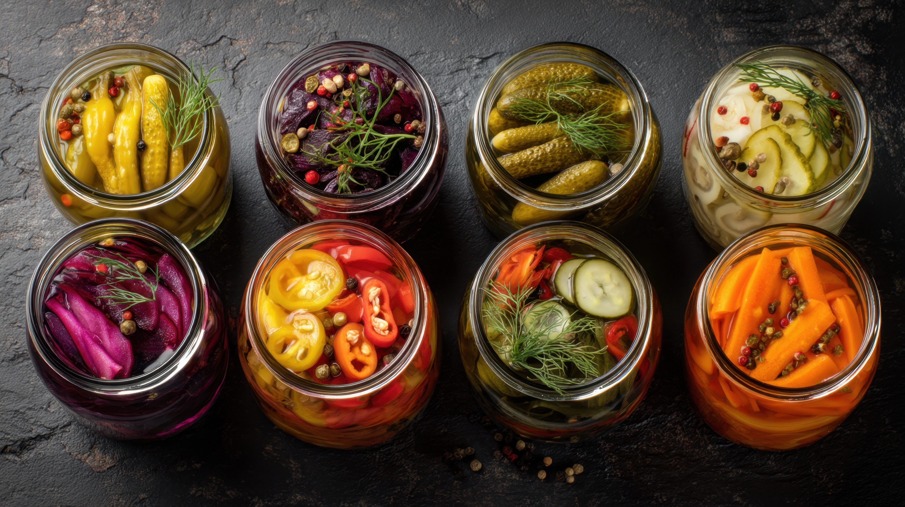
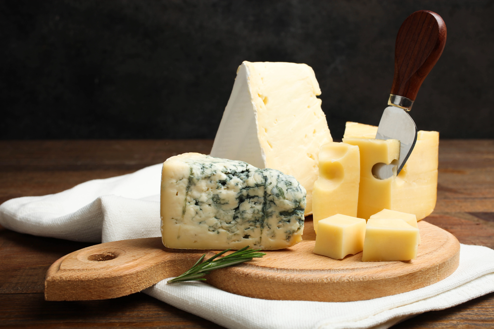
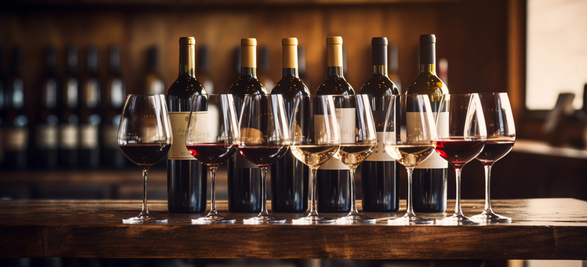

Une cuisine locale, bio et engagée
Terroir, saisons et zéro déchet au cœur de nos assiettes.
Découvrir le menu
Terroir, saisons et zéro déchet au cœur de nos assiettes.
Découvrir le menuChez Le Goût des Volcans, chaque plat est pensé pour mettre en valeur le terroir auvergnat : des producteurs que nous connaissons, des recettes qui évoluent avec les saisons, et une façon de cuisiner qui limite le gaspillage tout en gardant le plaisir du goût.
Notre cuisine s'articule autour d'un principe simple : travailler uniquement avec des producteurs de la région, labellisés bio ou en agriculture raisonnée.
Fromages d'Auvergne (Saint-Nectaire, Bleu d'Auvergne), légumes de saison cultivés par Clara, viandes d'éleveurs du coin... Chaque ingrédient raconte une histoire, celle d'un terroir et de ses artisans.
Lentilles blondes de Saint-Flour, charcuterie des Monts du Livradois, miel et noix du pays… Nous privilégions les circuits courts et les variétés locales pour des assiettes généreuses et sincères.


Notre carte change au rythme des saisons et des arrivages. En automne, courges, châtaignes et champignons ; en hiver, potées et fromages affinés ; au printemps, premiers légumes verts et agneaux ; en été, tomates, basilic et fruits rouges.
Nous ne proposons pas de menu fixe toute l'année : nous nous adaptons à ce que la nature et nos producteurs nous offrent. C'est aussi pour cela que nos formules restent accessibles et que chaque visite peut réserver des surprises.
« Cuisiner local, ce n'est pas une tendance chez nous, c'est une évidence. Chaque assiette est une rencontre entre le terroir et notre envie de vous régaler. »
— Julie, en cuisine

Notre démarche écoresponsable se traduit dans chaque geste : cuisson intégrale des légumes (avec fanes et épluchures), recyclage systématique, utilisation de bocaux en verre, transformation du pain rassis...
Rien ne se perd, tout se transforme en saveurs inattendues et délicieuses.
Les fanes de carottes parfument les bouillons, les épluchures de pommes de terre deviennent des chips croustillantes, et le pain de la veille se réinvente en pain perdu salé au bleu. La créativité naît des contraintes.
Nous réinventons les recettes traditionnelles auvergnates avec créativité et respect.
Nous puisons dans le répertoire auvergnat — truffade, aligot, lentilles — pour le réinterpréter avec des techniques actuelles et des associations surprenantes, toujours dans le respect du produit.



L'Auvergne est le pays du fromage : Saint-Nectaire, Bleu d'Auvergne, Cantal, Salers, Fourme d'Ambert… Nous les travaillons en déclinaisons salées et sucrées, en croquettes, en tartes, en accompagnement des viandes ou en fin de repas sur un plateau.
À côté des fromages, nous mettons à l'honneur la charcuterie locale, les lentilles blondes de Saint-Flour, la viande de Salers et les légumes de nos maraîchers. Chaque produit est choisi pour son goût et son histoire.
Nous accompagnons nos plats de vins du Massif central et d'Auvergne (Côtes d'Auvergne, Saint-Pourçain, Côtes du Forez), de bières locales et de boissons sans alcool (jus de fruits, infusions, eau). Notre sélection reste courte et qualitative, en phase avec notre approche locale et engagée.


Nous proposons une formule 100% végétarienne chaque semaine, et nous adaptons volontiers les plats aux régimes sans gluten, sans lactose ou aux allergies. Prévenez-nous à la réservation ou en début de repas : nous ferons notre possible pour vous régaler en toute sérénité.
Les enfants sont les bienvenus : nous pouvons proposer des demi-portions ou des assiettes adaptées. L'objectif est que toute la table reparte contente.
Découvrez la carte du jour ou réservez pour savourer nos plats en toute sérénité.